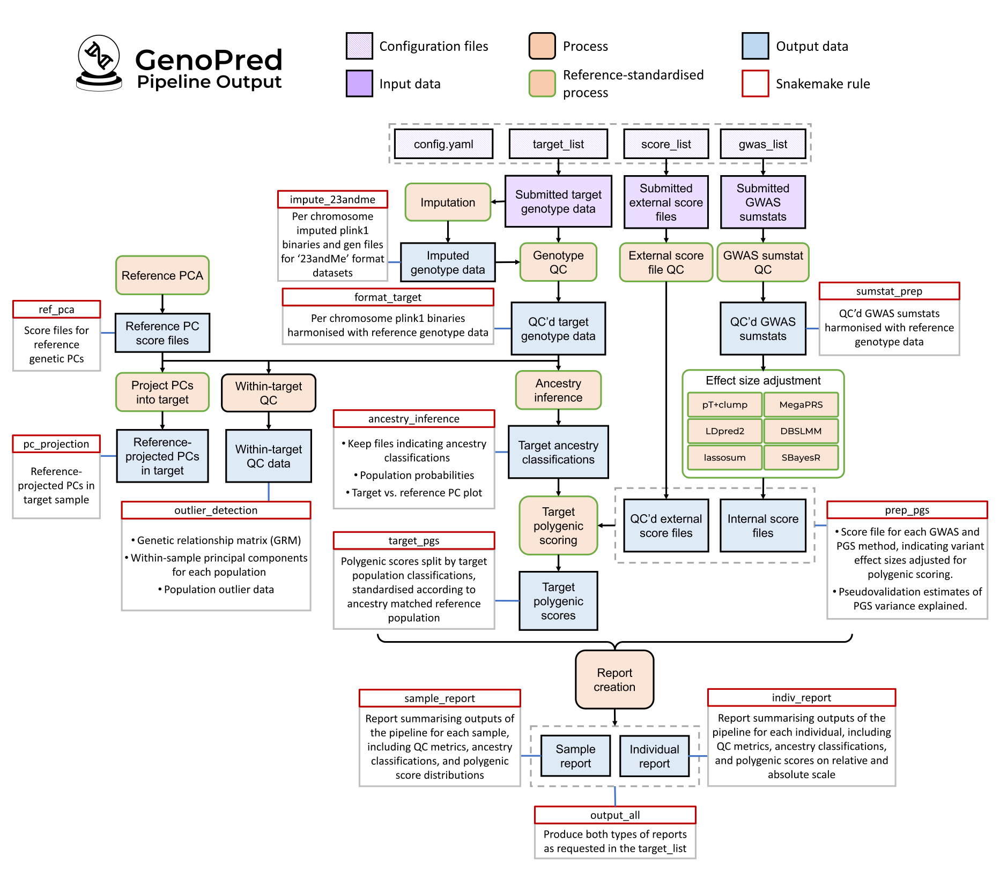

First, you will need to download the GenoPred repository from GitHub.
Open your terminal, go to the directory where you would like the
repository to be stored, and clone the repository.
Note: If you are using an high performance cluster
(HPC), it is best run the setup in an interactive session (see here).
git clone https://github.com/opain/GenoPred.git
Step 2: Create conda environment for pipeline
Conda is a software environment management system which is great way
for easily downloading and storing software. We will use conda to create
an environment that the GenoPred pipeline will run in.
If you don’t already have conda installed, we will install it using
miniconda.
wget https://repo.anaconda.com/miniconda/Miniconda3-latest-Linux-x86_64.sh
sh Miniconda3-latest-Linux-x86_64.sh
I would say yes to the default options. You may then
need to refresh your workspace to initiate conda, by running
source ~/.bashrc. You should see (base)
written in the bottom left of the terminal. Once miniconda installation
is complete, you can then delete the
Miniconda3-latest-Linux-x86_64.sh file.
Now create the conda environment based on the
GenoPred/pipeline/envs/pipeline.yaml file. This will create
an environment called genopred with some essential packages
installed.
Now, we will download some additional dependencies of the pipeline.
First, go into the pipeline folder within the GenoPred
repo. Now we are in the pipeline folder, we can use our first Snakemake
command to download the dependencies of the GenoPred pipeline.
cd GenoPred/pipeline
snakemake -j 1 --use-conda --conda-frontend mamba install_r_packages
This will start by building other conda environments, which the
pipeline uses to perform certain analyses. Then it will download a few
other dependencies of the pipeline. In total this process may take ~10
minutes.
Note: Check out advice here for running in parallel on an
HPC. The command might take some time, so run it via a compute node, and
if run interactively, I would suggest using a terminal multiplexer (like
tmux) to avoid connection issues (see here).
See explanation of Snakemake command
-j 1- This parameter tells Snakemake how many jobs can
be run in parallel.
--use-conda - This tells Snakemake to use conda
environments as specified in the pipeline. This parameter should always
be included when using GenoPred.
--conda-frontend mamba - This tells Snakemake to use
mamba when creating new conda environments, which is a faster version of
conda. This parameter is only required when running the GenoPred
Snakemake for the first time, as the environment only needs to be built
once.
install_r_packages - This is the rule we want
Snakemake to run. Other useful in GenoPred are described here. rules The rules included
in GenoPred will be described
For more information on Snakemake commands see here.
Containers
We have made docker and singularity containers with GenoPred
pre-installed. We provide an example of using the pipeline within the
container here. We also provide an
example running the pipeline in an offline environment, using a
container with pre-downloaded dependencies (see here). The containers can
avoid some installation issues, and allow the pipeline to be used on
non-linux based systems.
Note: When running the pipeline in the container,
you must mount a home directory. Additionally, specify the
resdir and outdir configfile parameters
outside of the container to ensure that the pipeline’s resources and
outputs are stored persistently for subsequent sessions.
Pipeline configuration
The pipeline is configured using a configfile, which tells the
pipeline what to do, and the location of the input data listed in the
target_list, gwas_list, and score_list files.
configfile
Snakemake reads the default config.yaml file located in
the pipeline directory to obtain its default parameters.
When using your own data, it’s recommended to create a new
configfile rather than modifying the default one. You can
then specify this custom configfile when running Snakemake
using the --configfile option.
This approach allows you to use the GenoPred pipeline with multiple
configurations. Importantly, only parameters that differ from the
defaults need to be included in your custom configfile. Any
parameter not explicitly defined in the custom configfile
will be automatically sourced from the default
pipeline/config.yaml file. This ensures that Snakemake only
overrides the parameters you specify, while continuing to use the
default settings for all others.
Required. I recommend using an absolute path starting
from the root of the file system (starting with /)
resdir
Directory to save pipeline resources
genopred_resources
Optional. Default is the resources folder
within the GenoPred/pipeline folder. I recommend using an
absolute path starting from the root of the file system (starting with
/)
config_file
Location of the config file itself
config.yaml
Required
gwas_list
Path to gwas_list file, listing GWAS
sumstats
example_input/gwas_list.txt
Set to NA if you don’t want to include and GWAS
sumstats
score_list
Path to score_list file, listing external
score files
example_input/score_list.txt
Set to NA if you don’t want to include any external
score files
target_list
Path to target_list file, listing target
datasets
example_input/target_list.txt
Set to NA if you don’t want to include any target
datasets
pgs_methods
List of polygenic scoring methods to run
['ptclump','dbslmm']
Options are: ptclump, dbslmm,
prscs, sbayesr, lassosum,
ldpred2, megaprs. Note.sbayesr and ldpred2 are only implemented for
GWAS of EUR ancestry.
testing
Controls testing mode
chr22
Set to NA to turn off test mode. Set to
chr22 if you want to run the pipeline using only chromosome
22.
Note: If you do not provide a target_list, then only
rules that do not require a target_list can be performed, such as GWAS
sumstat QC. Similarly, if you do not provide a gwas_list or score_list,
only rules that do not require these files can be performed, such as
target sample ancestry inference.
gwas_list
The gwas_list is a white-space delimited text file,
providing information of the GWAS summary statistics to be used by the
pipeline.
View gwas_list format
Column
Example
Description
name
COAD01
ID for the GWAS sumstats. Cannot contain spaces (’ ‘)
or hyphens (’-’)
path
gwas_sumstats/COAD01.gz
File path to the GWAS summary statistics (uncompressed
or gzipped).
population
EUR
Reference population that the GWAS sample matches best.
Options are AFR - African, AMR = Admixed
American, EAS = East Asian, EUR = European,
CSA = Central and South Asian, and MID =
Middle Eastern. If you are using a mixed ancestry GWAS, though there are
limitations, I would suggest specifying the population that matches the
majority of the GWAS sample.
n
10000
The total sample size of the GWAS. This is required if
there is no column indicating sample size in the sumstats. Otherwise, it
can be set to NA
sampling
0.5
The proportion of the GWAS sample that were cases (if
outcome is binary - otherwise specify NA)
prevalence
0.1
The prevalence of the phenotype in the general
population (if outcome is binary - otherwise specify
NA)
mean
100
The phenotype mean in the general population (if
outcome is continuous, otherwise specify NA)
sd
15
The phenotype sd in the general population (if outcome
is continuous, otherwise specify NA)
label
"Coronary Artery Disease"
A human readable name for the GWAS phenotype. Wrap in
double quotes if multiple words. For example,
"Body Mass Index".
Note: The prevalence and
sampling values are used to estimate the SNP-based
heritability on the liability scale, as requested by some PGS methods.
Furthermore, prevalence and sampling, or
mean and sd values are used to interpret the
polygenic scores on the absolute scale.
View GWAS sumstat format
The pipeline can accept GWAS sumstats with a range of header formats.
It uses a dictionary to interpret the meaning of certain column names.
This is useful but potentially risky. You have two options to ensure the
columns are being interpreted correctly:
Hope for the best and check the sumstat QC log file to see whether
header we correctly interpreted (lazy option but fine in most
cases).
Check whether the headers in your sumstats correspond to the correct
values in the sumstat header dictionary (here),
and update as necessary in advance of running the pipeline.
The sumstats must contain either RSIDs or chromosome and basepair
position information. The sumstats must also contain an effect size,
either BETA, odds ratio, log(OR), or a signed Z-score. Either P-values
or standard errors must also be present. It is also best if the
following are present: sample size per variant, GWAS sample allele
frequencies (for the effect allele), and imputation quality metrics.
I would suggest checking the sumstat QC log files, to check the
number of SNPs after QC is expected.
score_list
The score_list is a white-space delimited text file,
providing information of externally generated score files for polygenic
scoring are to be used by the pipeline. The score_list
should have name, path and label
columns, that the gwas_list has, except the
path column should indicate the location of the score
file.
PGS Catalogue score files can be directly downloaded by GenoPred, by
using the PGS ID in the name column, and setting the
path column to NA.
Note: Externally derived PGS score files may have a
poor variant overlap with the default GenoPred reference data, which is
restricted to HapMap3 variants. Score files with <75% of variants
present in the reference are excluded from downstream target scoring.
Several popular PGS methods restrict to HapMap3 variants, so this is not
always an issue.
View score file format
The format of the score files should be consistent with the PGS
Catalogue header format (https://www.pgscatalog.org/downloads/#scoring_header).
GenoPred can read the harmonised and unharmonised column names from PGS
Catalogue. It will preferentially use the harmonised columns if they are
present. The PGS Catalogue format comments are not required by GenoPred,
though they are useful so don’t actively remove them. GenoPred allows
only one column of effect sizes per score file. GenoPred is lenient, and
only requires either the RSIDs, or chromosome and basepair position
columns to be present.
rsID or hm_rsID - RSID
chr_name or hm_chr - Chromosome
number
chr_position or hm_pos - Basepair
position
effect_allele - Allele corresponding to
effect_weight column
other_allele - The other allele
effect_weight - The effect size of
effect_allele
target_list
The target_list is a white-space delimited text file,
providing information of the target datasets to be used by the pipeline.
The file must have the following columns:
View target_list format
Column
Example
Description
name
test_data/output/test1
ID for the target dataset. Cannot contain spaces (’ ‘)
or hyphens (’-’)
path
imputed_sample_plink1/example
Path to the target genotype data. For type
23andMe, provide full file path either zipped
(.zip) or uncompressed (.txt). For
typeplink1, plink2,
bgen, and vcf, per-chromosome genotype data
should be provided with the following filename format:
<prefix>.chr<1-22>.<.bed/ .bim/ .fam/ .pgen/ .pvar/ .psam/ .bgen/ .vcf.gz>.
If type is samp_imp_bgen, the sample file
should be called <prefix>.sample, and each
.bgen file should have a corresponding .bgi
file
type
plink1
Format of the target genotype dataset. Either
23andMe, plink1, plink2,
bgen, or vcf. 23andMe = 23andMe
formatted data for an individual. plink1 = Preimputed
PLINK1 binary format data (.bed/.bim/.fam). plink2 =
Preimputed PLINK2 binary format data (.pgen/.pvar/.psam).
bgen = Preimputed Oxford format data (.bgen/.sample).
vcf = Preimputed gzipped VCF format data
(.vcf.gz) for a group of individuals.
indiv_report
T
Logical indicating whether reports for each individual
should be generated. Either T or F. Use with
caution if target data contains many individuals, as it will create an
.html report for each individual.
Note: If prefix of your target genetic data files do
not meet the requirements of GenoPred, you can create symlinks (like a
shortcut) to the original genetic data, and then specify these symlinks
in the target_list.
Run using test data
Once you have installed GenoPred, we can run the pipeline using the
test data.
Step 1: Download the test data
First, we need to download and decompress the test data. Do this
within the GenoPred/pipeline folder.
# Download from Zenodo
wget -O test_data.tar.gz https://zenodo.org/records/10640650/files/test_data.tar.gz?download=1
# Decompress
tar -xf test_data.tar.gz
# Once decompressed, delete compressed version to save space
rm test_data.tar.gz
Step 2: Run the pipeline
To run the pipeline with the test_data, we will use the
example_input/config.yaml. It specifies some basic options
and specifies the target_list, gwas_list and
score_list in the example_input folder. The
testing parameter is set to chr22 so only
chromosome 22.
See contents of default configfile
# Specify output directory
outdir: test_data/output/test1
# Location of this config file
config_file: example_input/config.yaml
# Specify location of gwas_list file
gwas_list: example_input/gwas_list.txt
# Specify location of target_list file
target_list: example_input/target_list.txt
# Specify location of score_list file
score_list: example_input/score_list.txt
# Specify pgs_methods ('ptclump','dbslmm','prscs','sbayesr','lassosum','ldpred2','megaprs')
pgs_methods: ['ptclump','dbslmm']
# Specify if you want test mode. Set to NA if you don't want test mode
testing: chr22
See contents of example target_list
name
path
type
indiv_report
example_plink1
test_data/target/imputed_sample_plink1/example
plink1
T
See contents of example gwas_list
name
path
population
n
sampling
prevalence
mean
sd
label
BODY04
test_data/reference/gwas_sumstats/BODY04.gz
EUR
NA
NA
NA
0
1
“Body Mass Index”
COAD01
test_data/reference/gwas_sumstats/COAD01.gz
EUR
NA
0.33
0.03
NA
NA
“Coronary Artery Disease”
See contents of example score_list
name
path
label
PGS002804
test_data/reference/score_files/PGS002804.txt.gz
“Height Yengo EUR”
PGS003980
NA
“BMI”
PGS000001
NA
“Breast Cancer”
To run the pipeline with the example configfile and test data, we
just need to specify the number of jobs we want to run in parallel
(-j), the --use-conda parameter, and then the
rule we want the pipeline to run (output_all). See here to see what this rule will output,
and for information on other rules that can be run.
Executing the output_all rule will run many steps in the
pipeline. If you want to check what will happen before you run the
pipeline, it is often useful to use the -n parameter, which
will do a dry-run, printing out all the steps it would run, without
actually running it.
# Remember to activate the genopred environment and go into to the GenoPred/pipeline directory before running the pipeline
conda activate genopred
cd ~/GenoPred/pipeline
# Do a dry run to see what would happen
snakemake -n --configfile=example_input/config.yaml output_all
# Run the pipeline running one step at a time
snakemake -j1 --configfile=example_input/config.yaml --use-conda output_all
Once the pipeline is complete, you can check that there is nothing
else to do by doing another dry run, and it should say ‘Nothing to be
done’.
Step 3: Look through the output
There is detailed information here.
When using the default config.yaml, the outdir
parameter is test_data/output/test1.
For example, if you wanted to find the sample-level report,
summarising what the pipeline did, it can be found here:
test_data/output/test1/example_plink1/reports/example_plink1-report.html.
Or, if you wanted to find the DBSLMM PGS based on the COAD01 GWAS in
European target individuals, the file can be found here:
test_data/output/test1/example_plink1/pgs/EUR/dbslmm/COAD01/example_plink1-COAD01-EUR.profiles
After running the pipeline, it is often useful to update the
configuration of our analysis, for example to added a new GWAS to the
gwas_list. This is not a problem - GenoPred uses Snakemake to only rerun
analyses that are affected by the changes in configuration, rather than
running the full pipeline from scratch.
I will demonstrate by adding a new GWAS, but its a similar process
when adding new score files or target samples, or when changing certain
parameters in configfile. We simply add a new row to the
gwas_list, rerun GenoPred, and it will rerun the required
steps. As an example, I will add a row with the name ‘COAD02’, which
uses the same sumstats file as COAD01.
Code updating gwas_list
# Read in gwas_list
gwas_list <- fread('../pipeline/example_input/gwas_list.txt')
# Add new gwas (for demonstration I will reuse the sumstats for COAD01, but will name it 'COAD02')
gwas_list <- rbind(gwas_list, gwas_list[gwas_list$name == 'COAD01',])
gwas_list$name[3] <- 'COAD02'
# Put quotes around the label column
gwas_list$label <- paste0("\"", gwas_list$label, "\"")
# Save file
fwrite(gwas_list, '../pipeline/example_input/gwas_list.txt', quote = F, sep = ' ', na='NA')
name
path
population
n
sampling
prevalence
mean
sd
label
BODY04
test_data/reference/gwas_sumstats/BODY04.gz
EUR
NA
NA
NA
0
1
“Body Mass Index”
COAD01
test_data/reference/gwas_sumstats/COAD01.gz
EUR
NA
0.33
0.03
NA
NA
“Coronary Artery Disease”
COAD02
test_data/reference/gwas_sumstats/COAD01.gz
EUR
NA
0.33
0.03
NA
NA
“Coronary Artery Disease”
Now, we have edited the gwas_list, if I rerun the
pipeline using the -n parameter, I can see what new jobs
the pipeline would run.
This output is expected - The new GWAS will need to undergo sumstat
QC (sumstat_qc), downstream processing using PGS methods
(prep_pgs_ptclump_i,prep_pgs_dbslmm_i,prep_pgs_lassosum_i),
then target sample scoring (target_pgs_i), and finally
update the sample- and individual-level reports
(sample_report_i and indiv_report_i).
After seeing the expected jobs will be run, I would then run the
pipeline:
There is full documentation of Snakemake here, but in
this section I will give a brief overview and outline a few commands
that are particularly useful.
Snakemake is a python based pipeline tool. It contains lists of
rules - Each rule is like a set of instructions,
telling Snakemake to create certain outputs given certain inputs. If the
user requests an output, Snakemake will run all the rules that are
needed to create that output.
Importantly, Snakemake checks the timestamps of input and output
files, and parameters applied, ensuring the output file is created after
the input file, using the latest parameters. This helps if you need to
rerun your analysis after some changes, and want to make sure the output
has been correctly updated.
Useful Snakemake options
Here are some useful Snakemake options/commands to run the
pipeline:
--use-conda
This command tells Snakemake to create and use the conda environment
specified for each rule. This is a handy and reproducible way of
installing and running code in a tightly controlled software
environment.
This command should always be used when running GenoPred. All rules
in GenoPred use the same conda environment, so it only has to be build
once.
-j
This command allows to set the number of jobs that can run
simultaneously. E.g. -j 1 will run one job at a time. This
is most often what you want if you are running interactively.
-n
This command performs a dry run, where Snakemake prints out all the
jobs it would run, without actually running them. This is particularly
useful if you want to see what would happen if you were to specify a
certain output or rule. This helps avoid accidentally triggering 100s of
unwanted jobs.
--configfile
This parameter can be used to specify the .yaml file you want
Snakemake to use as the configuration file. This file is described above
(see here).
This will print the command Snakemake will run beneath of the jobs.
This is handy if you want to see what the jobs are doing. This is mainly
useful when debugging.
Running on an HPC
The GenoPred pipeline can be easily run in parallel using an HPC.
Here I outline a few suggestions on how to do this.
Don’t run on the login node
HPC’s are a shared resource, and the login node is for logging in,
not for running analyses. Instead, connect interactively to a compute
node before setting up or using the GenoPred pipeline, or submit your
Snakemake command as a batch job. There are likely time and memory
restrictions on the login node, leading to errors, or unhappy
colleagues. Read the documentation for your HPC for more
information.
Running jobs in parallel
Snakemake pipelines (such as GenoPred) can be easily parallelised. If
you have access to multiple cores, then you can increase the
-j parameter. Or if you have access to an HPC, then you can
tell Snakemake to submit jobs to the HPC (this is the most powerful
approach and I would recommend if possible). To submit jobs to the
cluster, I use the --profile flag. This flag points
Snakemake to a specific .yaml file, specifying Snakemake parameters,
including those that instruct it to use the HPC. I have provided an
example profile file (example_input/slurm.yaml), with
parameters telling Snakemake how to submit jobs to a SLURM scheduler.
SLURM users should create a folder called slurm in
$HOME/.config/snakemake, and then copy in the
slurm.yaml, renaming it to config.yaml. More
information about profiles in Snakemake can be found here.
Once you have set up a .yaml for your scheduler, you can tell
Snakemake to submit jobs to the scheduler by using the
--profile slurm parameter, instead of the -j1
parameter. E.g.
snakemake --profile slurm --use-conda output_all
Although, running the Snakemake command with the
--profile flag uses very little memory, I would still
suggest running it on a compute node to avoid clogging up the login
node.
Avoid connection issues
The pipeline can take hours for certain tasks, so if you are running
the Snakemake command using interactive session on your HPC, you will
likely run into issues due to your connection dropping out, leading to
the Snakemake analysis to end.
To avoid this, I use a terminal multiplexer, either tmux
or screen. When you are on the login node, start one of
these multiplexers. Once inside the multiplexer, start your interactive
session. The main reason for using a multiplexer here is that you can
reconnect to the session even if your connection stops. There are
several other advantages as well. They are really easy to use and will
make your life a lot better.
Note: If you have multiple login nodes on your HPC,
you will need to log in to the same login node to find your running tmux
session.
When using HPC systems, software conflicts often occur due to
pre-installed modules. This is particularly relevant when running
software like GenoPred, which requires a specific environment setup to
function correctly.
Before launching GenoPred, ensure your environment is clean by not
loading any unnecessary modules, especially those that can interfere
with software dependencies, such as R. You can check whether any modules
are loaded using the command module list, and unload any
loaded module using the command
module unload <module name>.
Requesting outputs
The GenoPred pipeline has many potential outputs. Here is a detailed
schematic diagram illustrating the inputs, outputs and processes of the
GenoPred pipeline.

Note: To see this image more clearly, right click
and open in a new tab.
Main rules
Each of the key outputs from the pipeline can be requested using the
corresponding Snakemake rule. For example, if I just wanted to obtain
QC’d GWAS summary statistics I could run the sumstat_prep
rule.
snakemake -j1 --use-conda sumstat_prep
Show table of rules for key outputs
Type
Rule
Description
Target
output_all
Generates both sample-level and individual-level .html
reports
Target
sample_report
Generates sample-level .html reports for target
datasets with format = ‘plink1’, ‘plink2’, ‘bgen’, or
‘vcf’.
Target
indiv_report
Generates individual-level .html reports for all
individuals in target datasets with indiv_report = T
Target
ancestry_inference
Perform ancestry inference for all target
datasets.
Target
target_pgs
Calculates all polygenic scores in all target
datasets.
Target
pc_projection
Projects reference genetic PCs into all target
datasets
Target
format_target
Harmonises all target datasets with the reference.
Target
outlier_detection
Perform QC within the target datasets, seperately for
each population with N > 100. Includes relatedness estimation, PCA,
and population outlier detection.
Target
impute_23andme
Perform genotype imputation of target datasets with
format = ‘23andMe’.
Reference
sumstat_prep
Performs quality control of all GWAS summary
statistics.
Reference
pgs_prep
Prepares scoring files for all GWAS using all PGS
methods.
Reference
ref_pca
Performs PCA using reference genotype data.
Specific outputs
The rules above trigger sets of outputs to be created. For example
the sumstat_prep rule performs QC of all GWAS in the
gwas_list. However, it is also possible to request more
specific outputs, such as QC’d sumstats for just one of the GWAS in the
gwas_list. If we had a GWAS with the name
COAD01, we could request QC’d sumstats for just that GWAS
like this:
# Create variables indicating the desired GWAS and the outdir parameter in the config file (by default Snakemake reads uses config.yaml)
gwas = COAD01
outdir = test_data/output/test1
# Run Snakemake command
snakemake -j1 --use-conda ${outdir}/reference/gwas_sumstat/${gwas}/${gwas}-cleaned.gz
I have included some handy R functions for reading in the outputs of
the pipeline. You just need to set your working directory to the
GenoPred/pipeline folder, and source the file
GenoPred/functions/pipeline.R.
Reads in polygenic scores (PGS) based on the provided configuration
and filters.
Parameters
config: Configuration file specifying paths and
parameters.
name (optional): A vector of names to filter the target
list. Default is NULL.
pgs_methods (optional): A vector of PGS methods to
include. Default is NULL.
gwas (optional): A vector of GWAS to include. Default
is NULL.
pop (optional): A vector of populations to include.
Default is NULL.
Returns
A list containing the filtered PGS data structured by target name,
population, GWAS, and PGS method.
See usage
# All PGS for all target datasets
pgs <- read_pgs(config = 'example_input/config.yaml')
# All PGS for specific dataset
pgs <-
read_pgs(config = 'example_input/config.yaml', name = 'example_plink1')
# PGS for specific dataset, using a specific PGS method
pgs <-
read_pgs(config = 'example_input/config.yaml',
name = 'example_plink1',
pgs_method = 'dbslmm')
# PGS for specific dataset, using specific PGS method, and specific GWAS
pgs <-
read_pgs(
config = 'example_input/config.yaml',
name = 'example_plink1',
pgs_method = 'dbslmm',
gwas = 'COAD01'
)
# PGS for specific target population in a specific dataset, using specific PGS method, and specific GWAS
pgs <-
read_pgs(
config = 'example_input/config.yaml',
name = 'example_plink1',
pgs_method = 'dbslmm',
gwas = 'COAD01',
pop = 'EUR'
)
# PGS for a specific dataset, using based on external score files only
pgs <-
read_pgs(
config = 'example_input/config.yaml',
name = 'example_plink1',
pgs_method = 'external'
)
read_ancestry
Reads in ancestry inference results for a given target_dataset.
Parameters
config: Configuration file specifying paths and
parameters.
name: Name identifier for which to read ancestry
data.
Returns
A list containing ancestry inference outputs, including keep lists
indicating population classifications, population probabilities model,
and the ancestry inference log file.
See usage
ancestry_info <-
read_ancestry(config = 'example_input/config.yaml',
name = 'example_plink1')
find_pseudo
Determines the pseudovalidation parameter for a given GWAS and PGS
method. See here
for more information on pseudovalidation.
Parameters
config: Configuration file specifying paths and
parameters.
gwas: A single GWAS identifier.
pgs_method: A single PGS method identifier.
Returns
A string representing the pseudovalidation parameter.
Note
ptclump has no pseudovalidation approach, so this
function will return the PGS based on a p-value threshold of 1.
Don’t worry too much about this, as the pipeline will adjust
according to the resources available. The requirements of the pipeline
vary depending on the rules applied and the input data provided. I would
suggest providing a minimum of 8GB RAM per core when using the pipeline.
Ideally you would have access to more cores, so more intensive PGS
methods run in a timely manner. We have performed a benchmark of time
and memory used by each rule in the pipeline (link).
When running the pipeline using the --profile flag, PGS
methods (except pT+clump) are run using the number of cores specified by
the cores_prep_pgs parameter in the config file (by default
10). When running SBayesR and PRS-CS in parallel, more memory is
required, with the pipeline requesting 4Gb x n_cores and 2Gb x n_cores
respectively. If you are running the pipeline in your current session,
using the -j parameter, PGS methods will be restricted
accordingly. For example, if -j 2, then PGS methods would
be restricted to 2 cores.
Required storage space will also vary depending on the input data and
configuration. This is also shown on the pipeline benchmark page (link).
Note. The pipeline will create a subset version of
the target genotype data, restricted to HapMap3 variants in PLINK1
binary format. This can require significant storage space. For example,
UK Biobank is ~140Gb in this format.
Additional parameters
Using your own reference
The default reference genotype data used by GenoPred is a previously
prepared dataset, which is based on the 1000 Genomes Phase 3 (1KG) and
Human Genome Diversity Project (HGDP) sample, restricted HapMap3
variants. This dataset contains 1204449 variants for 3313
individuals.
Users can provide their own reference data using the
refdir parameter in the configfile. For
example, if the reference data was in ~/data/private_ref, I
would include refdir: ~/data/private_ref in the
configfile. The reference data folder must have the
following structure:
[refdir]
├── ref.chr[1-22].[pgen/pvar/psam] (plink2 genotype data with RSIDs in SNP column)
├── ref.chr[1-22].rds (SNP data - refer to default ref data for format)
├── ref.pop.txt (Population data for reference individuals - with header)
├── ref.keep.list (lists keep files for each population - columns pop and path - no header)
├── keep_files
│ └──[pop].keep (keep files for each population - no header)
└── freq_files
└──[pop]
└──ref.[pop].chr[1-22].frq (plink1 .frq format)
Note: .psam, ref.pop.txt and keep_files must contain
IID, and can optionally include FID information. The ID information must
be consistent across these files.
Altering PGS method parameters
It is possible to alter parameters for certain PGS methods by setting
the following parameters in the configfile:
ptclump_pts: list of p-value thresholds for
ptclump
dbslmm_h2f: list SNP-h2 folds for DBSLMM - use
1 for the default model
prscs_phi: list phi parameters for PRS-CS - use
auto for the auto model
prscs_ldef: Selected whether PRS-CS ld reference is
derived from 1kg (default) or ukb (UK
Biobank).
ldpred2_model: list models for LDpred2 -
grid, auto, inf
See the default configfile
for examples of these parameters being set.
Specifying unrelated target individuals
Relatedness estimation is one part of the within-sample QC (requested
using the outlier_detection rule). A list of unrelated
individuals is then used for downstream PCA. However, relatedness
estimation can be computationally intensive for large samples, and often
relatedness has already been estimated for such samples. For example, UK
Biobank genetic data comes with precomputed kinship data. To avoid
unnecessarily estimating relatedness within the GenoPred pipeline, there
is an optional unrel column in the
target_list, where the user can specify a file listing
unrelated individuals in each target sample. If this column is not
NA for a given target sample, the within-sample QC script
skips the relatedness estimation, and uses the precomputed list of
unrelated individuals for downstream PCA.
Altering ancestry threshold
By default, individuals are assigned to a reference super population
if the probability is >0.95. However, users can alter this threshold
as desired using the ancestry_prob_thresh parameter in the
config file.
Control computational resources
The user can control the cores and memory allocated to certain tasks
in the pipeline to fit their needs.
By default, the pipeline allocates 10 cores running polygenic scoring
methods (except ptclump). The number of cores allocated to
polygenic scoring methods can be altered using the
cores_prep_pgs parameter in the config file.
By default, the pipeline allocates 10 cores and 10Gb memory when
performing target scoring. The number of cores and memory allocated to
target scoring can be altered using the cores_target_pgs
and mem_target_pgs parameters respectively.
By default, the pipeline allocates 10 cores when imputing 23andMe
target datasets. The number of cores can be altered using the
cores_impute_23andme parameters in the config file.
By default, the pipeline allocates 5 cores when running the
outlier_detection rule (estimating relatedness and within sample PCs).
The number of cores can be altered using the
cores_outlier_detection parameters in the config file.
Running in offline environment
See here if you would like to run
the GenoPred pipeline in an environment that does not have access to the
internet. In brief the user must download the resources required by
GenoPred, transfer them to their offline environment.
Troubleshooting
Please post questions as an issue on the GenoPred GitHub repo here. If errors
occur while running the pipeline, log files will be saved in the
GenoPred/pipeline/logs folder. If running interactively
(i.e. -j1), the error should be printed on the screen.
If there is an unclear error message, feel free to post an issue. A
good approach for understanding the issue, is running the failed job
interactively, by using the -p parameter to print the
failed command, and then running interactively to understand the cause
of the error.